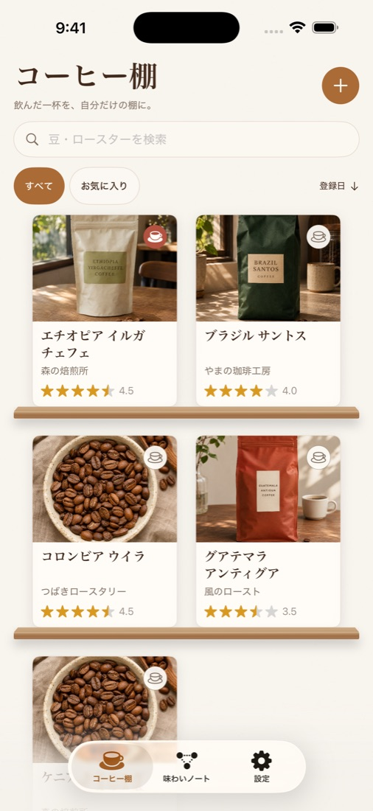
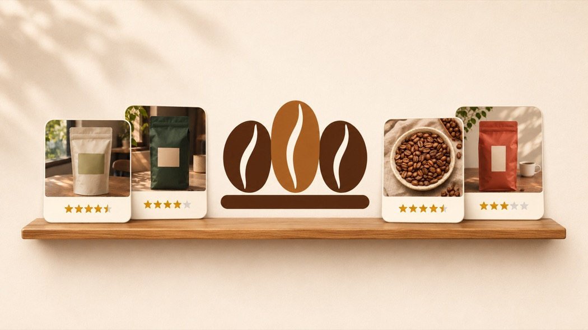
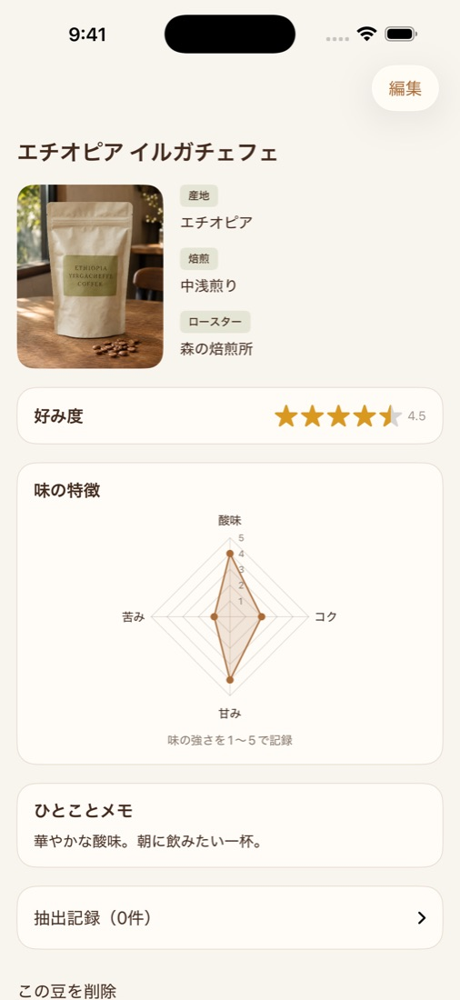
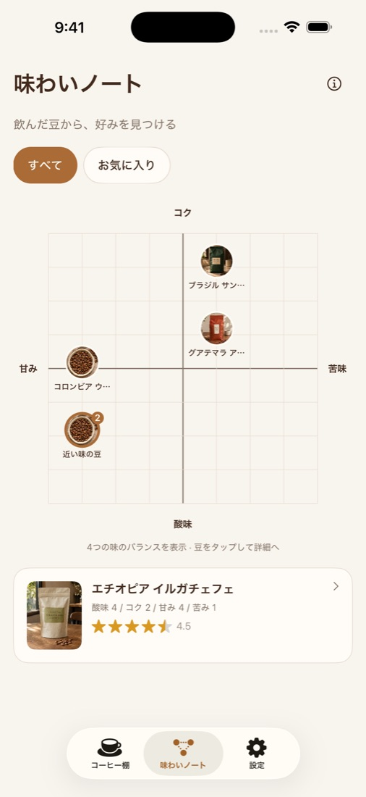

01 / COLLECT
写真で並べる、コーヒー棚。
豆の名前、ロースター、産地や焙煎度をまとめて記録。検索や並べ替えで、また飲みたい豆を探せます。
COFFEE SHELF
おいしかった豆も、好きだった味わいも。
写真と感想を残して、次の一杯につなげましょう。

あなたの一杯を残す

01 / COLLECT
豆の名前、ロースター、産地や焙煎度をまとめて記録。検索や並べ替えで、また飲みたい豆を探せます。

02 / REMEMBER
好み度は0.5刻みの星で。酸味・コク・甘み・苦みの強さもそれぞれ記録し、感想をメモできます。

03 / DISCOVER
4つの味を記録すると、味わいノートに豆が並びます。近い味の豆を見比べて、好みの傾向を探せます。
画面内の豆・写真は紹介用のサンプルです。
いつもの一杯を、少し大切に。
iPhone向けコーヒー記録アプリ。
基本機能は無料。広告非表示の買い切り購入に対応しています。